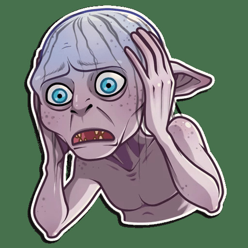

Menu
Dan's Log Book

Week 1
Tuesday May 19, 2020
Start: 17:15
- Accepted request to team up with Justin T, Brandon H, and Troy A
- Project meeting with Justin T, Brandon H, and Troy A
End: unknown
Wednesday May 20, 2020
Start: 13:30
- Prepared short presentation on the pros and cons of using Github as project repository
- Attended project meeting @ 13:00 to come up with plan and delegate tasks
End: 15:00
Thursday May 21, 2020
Start: 8:00
- Started working on project plan
- Read through project charter, rubrics, and sample project plan to gather information regarding project requirements
- Grouped sections of phases into 'categories' for ease of understanding
- Phase 1
- Project Plan
- Github Webpage Server
- STM32 Programming via HAL
- Virtual Controls / Indicators
- Finite Elevator Logic
- Phase 2
- Data Server (Database)
- Diagnostic Display & Control Program (Website / Graphical User Interface
- Phase 3
- Integration of Phase 1 and 2 Modules
- Presentation/Report
- Created "Project Plan.xlsx" excel document to put project plan information into graphical representation
End: 12:00
Friday May 22, 2020
Start: 12:30
- Prepared for project meeting
- Attended project meeting @ 13:00
- Cleared up tasks required for Monday's debrief
- Started working on Assignment 1 for Software Engineering with Justin T
- Created Github webpage to act as server for project
- Started transfering current project plan into html for website. Uploaded completed sections.
End: 14:30
Saturday May 23, 2020
Start: 7:30
- Broke down Phase 1 tasks into main issues
- Broke down Phase 1 issues into more specific Tasks (Work Breakdown). Delegated 50% of them.
End: 10:00
Sunday May 24, 2020
Start: 20:00
- Assisted group members with understanding Github
- Tidied up project plan
End: 23:30
Week 2
Monday May 25, 2020
Start: 8:00
- Transfered logbook into html format for website. Uploaded to website.
End: --